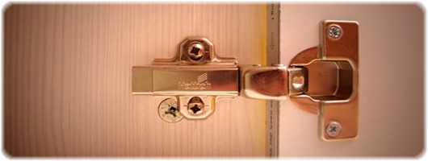
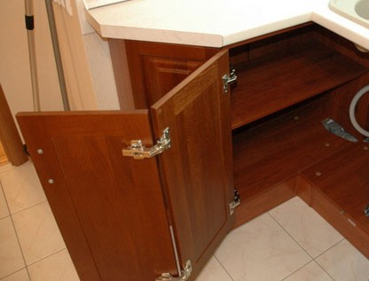
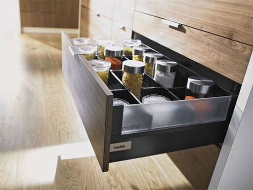
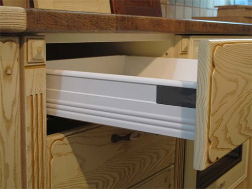
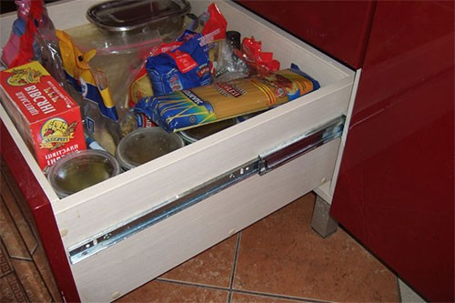
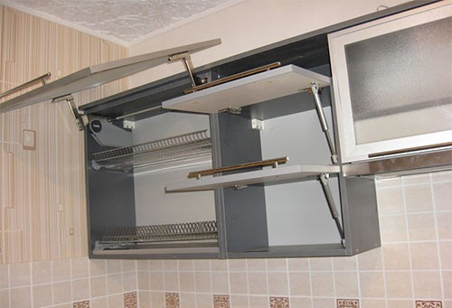

Мебельная фурнитура

Очень важной составляющей любого кухонного гарнитура, которая напрямую влияет на его качество (так же, как материалы, из которых он сделан, или проект, по которому он сделан).
Фурнитура – это довольно большой ассортимент механизмов и систем, служащих для увеличения функциональности мебели.
Если говорить о кухонных гарнитурах, то здесь, чаще всего используются:
- Петли для фасадов
- Выдвижные механизмы (направляющие)
- Подъемные механизмы (подъемники и лифты, всевозможные подъемные системы)
Кроме всего вышеперечисленного, в кухнях еще используются:
- Регулируемые опоры
- Ручки
- Навесы (для навески верхних ящиков на стену)
- Выдвижные корзины (карго, выдвижные системы)
Давайте рассмотрим основную фурнитуру, так как именно от нее в большей мере зависит качество кухни.
Петли для фасадов
В зависимости от положения кухонной дверцы (относительно короба), петли бывают разными: накладными, полунакладными, штольными, вкладными, рассчитанными под определенные углы и прочие Данная фурнитура всегда находится «в работе» (дверцы кухонного гарнитура открываются и закрываются регулярно). Поэтому, она должна быть довольно качественной. |
Выдвижные системы
В любом кухонном гарнитуре, фасады установлены либо на мебельные петли, либо на выдвижные механизмы. Выдвижные механизмы – это, как правило, системы выдвижения для выдвижных ящиков (либо системы, которые сами являются выдвижными ящиками). Это такая же используемая фурнитура, как и петли. В любой кухне есть выдвижные ящики, так как они очень удобны в эксплуатации. Перечень этой фурнитуры довольно большой. Рассмотрим все по порядку. Тандемы и тандембоксы – это целые системы (довольно сложные) выдвижения с «самодоводным» механизмом. Причем тандемы – это системы для выдвижных ящиков (сделанных из того же ДСП), а тандембоксы – это уже готовые системы, являющиеся уже как бы готовыми ящиками (для их сборки, как правило, нужно только одно дно из ДСП или МДФ, которое будет определять их ширину). |
|
Метабоксы представляют собой тоже готовые выдвижные системы, только более простые. Качество у них намного ниже, чем у предыдущих. 
Основное отличие ящиков тандембокса и метабокса: конструкция системы выдвижения. Конструкция у метабоксов более простая: боковые стенки из металла опираются на ролики направляющих, закрепленных внутри стола. Тандембокс устроен технически сложнее - это совокупность двойной стенки ящика, скрывающей внутри себя механизм, и телескопических направляющих, закрепленных внутри стола. Именно конструкция определяет цену. Тандембокс со встроенным доводчиком примерно вдвое дороже метабокса с доводчиком. Так же к отличиям систем можно отнести выдвижение ящиков (см. рис.): у метабокса неполное, примерно на 3/4, у тандембокса - полное. Когда это имеет значение? При малой глубине стола, тумбы неполное выдвижение ящика ухудшает обзор и усложняет процесс вынимания содержимого. Начальное усилие при выдвижении ящика меньше у метабоксов, их легче выдвинуть, однако в нагруженном состоянии метабоксы сильно давят на ролики, движение становится затрудненным. Допускаемая нагрузка на направляющие: у метабоксов до 25 кг; у тандембоксов 30-50кг (в некоторых модификациях 40-60) Так же следует учесть звук при движении:у метабоксов шумный и глухой с некоторым ударом перед срабатыванием доводчика, у тандембокса ход заметно более тихий, плавный. 
Ну а обычные направляющие (шариковые или роликовые) – это бюджетный вариант рассматриваемой нами фурнитуры (хотя, шариковые (их еще называют телескопическими), хоть и просты в устройстве, но довольно качественные). Простой монтаж, легкое выдвижение и низкая цена – вот три основных составляющих популярности роликовых направляющих. Однако у данного типа направляющих существует и ряд недостатков: выдвижной ящик выдвигается не до конца, при открытии направляющие сильно шумят, выдерживают лишь небольшую нагрузку. Шариковые направляющие относятся к системе выдвижения более высокого класса чем роликовые. Среди неоспоримых достоинств шариковых направляющих – полное выдвижение сетчатых корзин и ящиков, возможность выдерживать значительную нагрузку, почти в два раза превышающую допустимую для роликовых систем, бесшумность и плавность выдвижения, высокая надежность и длительный срок службы. Поверхностно взглянув на разницу между шариковыми и роликовыми направляющими можно сказать, что они по существу делают одно и то же; позволяют открыть и закрыть ящик. Однако разница между ними очевидна, роликовые направляющие обычно используются в «бюджетных» диапазонах мебели, в виду низкой их стоимости. Шариковые направляющие, в связи с более сложной конструкцией и технологией производства не могут соперничать с роликовыми по цене, но за счет более высоких потребительских качеств широко востребованы среди потребителей ценящих качество, комфорт и надежность. |
Подъёмные механизмыНу и последний вид фурнитуры для кухни – подъемные механизмы. 
К ним могут относиться в полном смысле подъемники (которые открывают и закрывают фасад по сложной траектории, причем, фасад связан с коробом только посредством этих механизмов), и всевозможные лифты и подъемники, которые открывают или закрывают фасад, закрепленный на коробе с помощью петель. Подъемные механизмы обычно используют в конструкциях навесных шкафов, которые имеют распашной тип открытия дверей, вследствие чего, они создают ощущение некой громоздкости. Альтернативой служат дверцы, которые откидываются вверх. Благодаря такому механизму открытия доставать предметы из шкафа становиться очень удобно. При использовании таких механизмов фасады не нужно оборудовать ручками, они открываются при слабом нажатии на них. |
Как было сказано в начале статьи, вся эта фурнитура влияет на качество кухни. Соответственно, чтобы сделать это качество выше – фурнитура должна быть тоже довольно качественной.
Какие же критерии имеет качественная фурнитура?
А они могут быть следующими:
- Материал, из которого она сделана
- Количество рабочих циклов (например, открытия-закрытия)
- Гарантия
- Цена
- Производитель
Из вышеприведенного списка, основным критерием качества можно считать «производителя».
Применяя фурнитуру зарекомендовавших себя в течение длительного времени производителя (например, тот же «Blum» или «Hettich»), за качество изделия, на которое эта фурнитура будет установлена, можно не переживать.
На этом все.
До встречи.